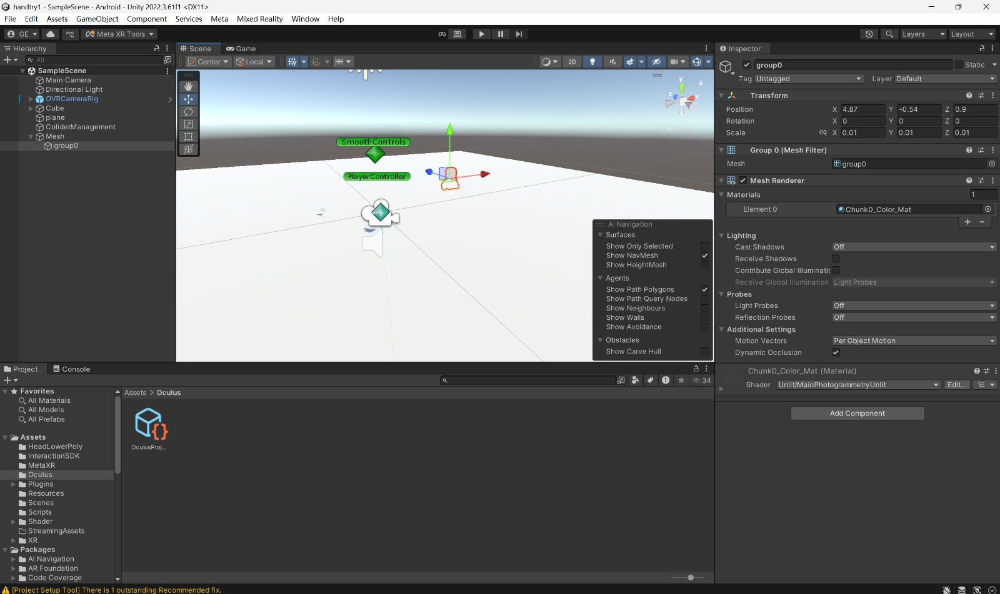
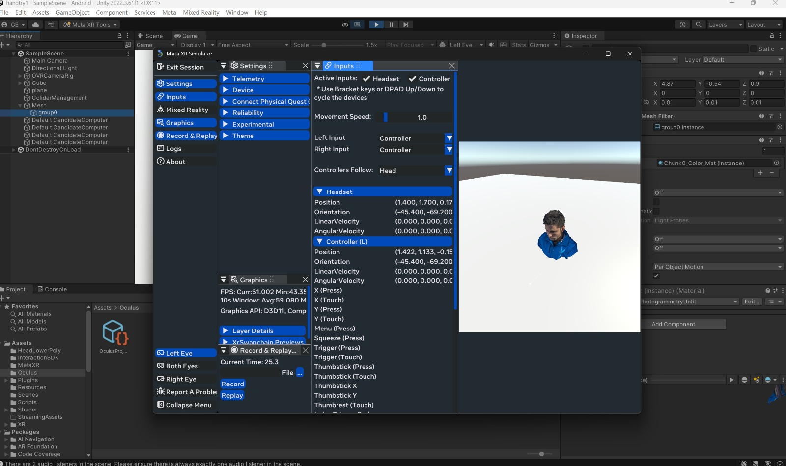

VR Deformation Project Update
Team: 31
Names: Yun Chung Chang, Jason Du, Panfeng(gavin) Jiang, Zitong (Peter)
Hu
Link to webpage:
https://zx40224617.github.io/CS184ProjectMilestone/
Link to GitHub repository:
https://github.com/zx40224617/CS184ProjectMilestone
Link to Slides:
https://docs.google.com/presentation/d/1TQ5CYKosT6dn6D2nySOHmOno0FpldIBabOoR8wUYkxc/edit?usp=sharing
Link to Videos:
https://drive.google.com/file/d/1ojGxxRFlo2bf39vN3Ag17khr031n815t/view
Project Overview
The VR Deformation project aims to develop a real-time, interactive mesh
deformation system for virtual reality environments. By enhancing
immersion through dynamic, responsive mesh modifications, we seek to
explore novel ways users can interact with and manipulate virtual objects
directly via hand tracking or controller inputs.
Approach
Custom Shader-Based Deformation: Leverages GPU-powered shaders to compute
and render mesh deformations at high performance without modifying the
underlying mesh data on the CPU.
Progress To Date
We have successfully completed the initial setup of our development
environment:
-
Installed and configured Unity with the necessary XR plugins
(OpenXR/OVR).
-
Established a stable connection to our target VR device (e.g., Meta
Quest), including reliable hand-tracking data retrieval.
-
Started prototyping the deformation logic within custom Unity shaders,
referencing existing open-source implementations.
|

Interactive Demo setup in Unity
|

Interactive Object Mesh
|
Preliminary Results
Our preliminary experiments indicate:
-
The shader-based approach can achieve visually convincing deformations
in real time. Prior art demonstrates feasibility, and we plan to
enhance realism through improved normal mapping and shading
techniques.
-
To date, no known Unity solutions implement our vertex modification
scheme without third-party plugins, highlighting the novelty of our
second approach.
Updated Work Plan
Following insightful discussions with our TA and Prof. Ren Ng, we have
decided to:
-
Focus efforts on refining and optimizing the shader-based deformation,
aiming to deliver a fully functional demo within the next milestone.
-
Enhance the the interaction quality between the hands and the objects
to achieve a more realistic deformation based on the given hand
gesture.
Next Steps
-
Complete advanced shader features (e.g., adaptive tessellation,
improved lighting).
-
Integrate intuitive user interactions via hand tracking for real-time
deformation control.